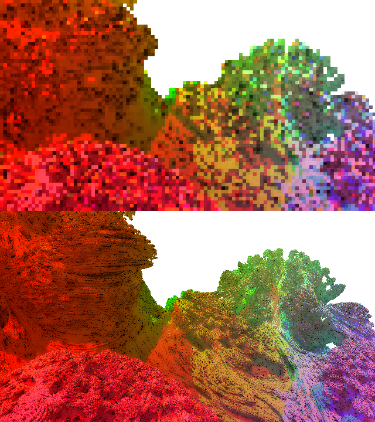

FraCuda
Bachelor Thesis by Clemens Rögner
FraCuda is a fractal renderer using CUDA. It features a real-time application to explore the fractal and save interesting camera positions. Those camera positions then can be used to render high quality images with the corresponding application. This project was part of my Bachelor Thesis, which contains additional informations about fractals in general and the application.
- Documents
-
Bachelor Thesis Please don't look
As mentioned before the Thesis contains additional information, such as a small essay on fractals and the theory on rendering them. Furthermore it explains the problems that came up during the implementation and discusses the effects I used in it. The thesis can be found here (Bachelor Thesis format).
Usage One person read it!
In addition to the Thesis, which explains the theory, I wrote a document that explains the practical work flow of the application. It can be found here.
- Real-Time application
-
General Now or never
The real-time rendering application serves two purposes: the exploring of the fractal and saving interesting camera shots so they can be rendered in high quality later on. This part of the application uses faster float-operations and no over sampling. Furthermore progressive refinement is used when the camera position is changed to enable responsive user controlling of the camera.
Visual Material
Sadly I was unable to capture a video of the usage, but i will try it again. The picture below shows the same scene with and without progressive refinement:
 - High Quality Renderer
-
General Wait longer..
The high quality renderer runs in CUDA as well with all the parameters turned up to get the best visual quality.
Visual Material
The video below was rendered in several hours:
The picture below is a single frame of that video generated in 2 minutes:

- Effects and Features
-
Visual Effects Eyecandy
- Screen Space Ambient Occlusion techniques: The original method and Horizon Based Ambient Occlusion
- Bloom
- HDR rendering with Reinhardt Tone Mapper
Other Features More of the good stuff
- Point Lights and Environment Lights
- Different modes for direct lighting: No shadow, ray-casted shadows
- Stereoscopic 3D rendering